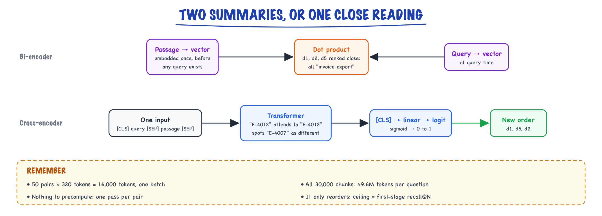

Reranking // Knowledge & RAG
Cross-encoder rerankers: retrieve wide, rescore, keep the best few.
01 — At a glance
Two-stage retrieval for production RAG: bi-encoder pulls top-50 from your vector database fast, cross-encoder reranker scores query-passage pairs with joint attention, then top-5 chunks go to the LLM. Standard +15–25% nDCG precision boost after ANN recall.

Two-stage pipeline: Vector search & databases top_k=50 (~20 ms) → cross-encoder rerank (~50–80 ms for 50 pairs) → top 5 chunks to LLM. Typical +15–25% nDCG vs bi-encoder alone in The RAG pipeline stacks.
02 — New words
| Word | Meaning |
|---|---|
| First-stage retrieval | The fast search (BM25, embeddings, or both fused) that pulls a candidate list of, say, 50 chunks out of millions. |
| Reranker | A slower, more accurate model that rescores only those candidates and reorders them. |
| Bi-encoder | A model that embeds query and passage separately; their similarity is a dot product of two vectors computed independently. |
| Cross-encoder | A model that reads the query and the passage together in one input and outputs a single relevance score. |
| Logit | The raw score a cross-encoder outputs; passing it through a sigmoid gives a number between 0 and 1. |
| Candidate depth \(N\) | How many first-stage results are sent to the reranker. |
| Kept \(K\) | How many reranked results are passed on to the language model. |
| Late interaction (ColBERT) | A middle ground: store one vector per token of each passage, and score by matching each query token to its best passage token. |
| MaxSim | ColBERT's score: for each query token, the highest similarity to any passage token, summed over query tokens. |
| Pointwise / listwise | Scoring each passage on its own, versus judging a whole list of passages at once and returning an order. |
| MMR | Maximal marginal relevance: choosing results that are relevant but not near-copies of results already chosen. |
| Abstention threshold | A reranker score below which the system says it found nothing relevant instead of answering. |
| Reranking | Cross-encoder reorders retrieved candidates; biggest RAG quality lever. |
The lesson
03 — The question
First-stage retrieval is built for speed: it must search millions of chunks in tens of milliseconds, so it compares precomputed vectors or looks up word lists. That speed has a price in precision. The answer is usually somewhere in its top 50, but often not in its top 5, and the top 5 is what the language model reads. Reranking spends a much more expensive model on just those 50 candidates to put the right ones first.
Interviewers ask:
- Why is a cross-encoder more accurate than a bi-encoder, and why can it not replace it?
- How do you choose how many candidates to rerank and how many to keep?
- What does reranking cost in latency and money, and what are the alternatives (ColBERT, LLM rerankers)?
- Can you use reranker scores to decide that nothing relevant was found?
The running example continues from hybrid search. A customer of the support assistant asks "error E-4012 when exporting invoices". Hybrid retrieval with reciprocal rank fusion returned 50 candidates whose top three were nearly tied:
| Fused rank | Chunk | RRF score |
|---|---|---|
| 1 | d5: "Troubleshooting export errors: most export failures are caused by missing invoice fields." | 0.0325 |
| 2 | d1: "Error E-4012: the export failed because the invoice has no tax ID. Add a tax ID and retry." | 0.0323 |
| 3 | d2: "Exporting invoices to CSV: open Billing, select the invoices, and choose Export." | 0.0320 |
Only d1 answers the question. The fused scores cannot tell them apart, because neither retriever ever read the question and a passage together. That is what a reranker does.
04 — Step 1: why the first stage cannot be precise
A bi-encoder turns each passage into one vector before any query exists. That vector has to serve every question anyone might ask about the passage: "what is E-4012", "why did my export fail", "do invoices need a tax ID". It is a summary, and a summary loses detail. At query time, the only interaction between question and passage is one dot product between two summaries.
So the bi-encoder can tell that d1, d2 and d5 are all "about invoice export problems", and rank them near each other and above password resets. What it cannot do is check whether the specific code in the question is the specific code the passage explains, or whether a passage that matches the topic actually answers the question asked. BM25 has the opposite limitation: it sees the shared token "E-4012" but nothing of meaning.
The useful consequence: first-stage retrieval is good at recall at depth (is the answer somewhere in the top 50?) and mediocre at precision at the top (is it in the top 5?). A second stage can fix the order, but only of what the first stage found.
05 — Step 2: how a cross-encoder scores a pair
A cross-encoder concatenates the query and one passage into a single input, typically
[CLS] error E-4012 when exporting invoices [SEP] Error E-4012: the export failed because the invoice has no tax ID. Add a tax ID and retry. [SEP]
and runs a transformer over it. Because attention runs across the whole input, every query token can attend to every passage token in every layer: "E-4012" in the question attends directly to "E-4012" in the passage; "exporting" to "export failed"; the model can notice that d4's "E-4007" is a different code. The final vector of the first token goes through a small linear layer that outputs one number, the relevance logit. A sigmoid turns it into a score between 0 and 1.
Training uses (query, passage, label) examples: relevant pairs labelled 1, and hard negatives (passages a first-stage retriever ranked highly that are not answers) labelled 0, with a binary cross-entropy loss; or one positive plus several negatives per query with a softmax over them. The hard negatives are what teach it the distinctions the first stage misses, such as the right topic but the wrong code.
For our candidates, a reranker would give d1 a high logit and d5 and d2 clearly lower ones: d5 is about export errors in general, d2 is about exporting at all, and only d1 is about E-4012. The order becomes d1, d5, d2.

A bi-encoder compares two vectors computed separately, so d1, d5 and d2 all look like invoice export problems; a cross-encoder reads the query and one passage together, lets every query token attend to every passage token, and puts d1 first.
Why not use a cross-encoder for everything? It has nothing to precompute. The passage's representation depends on the query, so every query needs one full forward pass per passage. For 30,000 chunks of about 300 tokens, that is roughly 9.6 million tokens of transformer computation per question. On 50 candidates it is about 16,000 tokens: roughly a thousand times more than embedding a 15-token query, but affordable, because it is one batched forward pass.
06 — Step 3: retrieve wide, rerank narrow
The standard design has two numbers to choose: the candidate depth \(N\) and the number kept \(K\). Two facts drive them.
The reranker's ceiling is the first stage's recall at \(N\). If the answer is not among the \(N\) candidates, no reranker can find it. Larger \(N\) raises that ceiling.
Reranking cost grows linearly in \(N\), and an imperfect reranker given more candidates also faces more distractors.
A synthetic model makes the trade visible (the code is at the end). Each query has 5,000 candidate chunks with a hidden relevance; the answer's relevance is high. The first stage sees relevance through a lot of noise; the reranker through much less. Measured over 2,000 simulated queries:
| Candidates \(N\) | First-stage recall@\(N\) | Answer in top 5 after reranking (good reranker) | Same, noisier reranker |
|---|---|---|---|
| — (no reranking) | — | 0.516 (first stage's own top 5) | |
| 10 | 0.643 | 0.641 | 0.638 |
| 20 | 0.757 | 0.748 | 0.725 |
| 50 | 0.882 | 0.846 | 0.774 |
| 100 | 0.940 | 0.865 | 0.766 |
| 200 | 0.976 | 0.875 | 0.732 |
Read it as three lessons. Reranking 50 candidates lifts "answer in the top 5" from 0.52 to about 0.85: the main benefit. Going from 50 to 200 candidates quadruples the reranking cost for 3 more points with a good reranker, and loses points with a weaker one, which gets confused by more near-misses. And the after-reranking number can never exceed the first-stage recall in the same row.
These numbers come from a toy model, not from any real system. The shape is what transfers: measure first-stage recall at several depths on your golden set, rerank at a few depths, and pick the smallest \(N\) where the final top-\(K\) quality stops improving. Typical choices land at \(N\) = 20 to 100 and \(K\) = 3 to 10.
07 — Step 4: latency and cost
A cross-encoder's cost per query is roughly \(N \times\) (query tokens + passage tokens). For \(N = 50\) and 320 tokens per pair: 16,000 tokens through the model. All 50 pairs go in one batch, so on a GPU the latency is one batched forward pass.
- A small cross-encoder (tens to a few hundred million parameters) on a GPU typically scores 50 such pairs in a few tens of milliseconds; on a CPU, hundreds of milliseconds (order of magnitude; measure on your hardware).
- Larger rerankers (billions of parameters, often fine-tuned from LLMs) are more accurate and several times slower.
- Hosted rerank APIs charge per search or per document scored, and add a network round trip.
Levers when reranking is too slow: lower \(N\); truncate passages to the first few hundred tokens (most relevance signal is early, and cross-encoders have an input limit anyway, often 512 tokens); use a smaller reranker model; or cache results for repeated queries. In a typical RAG request the language model's generation dominates total latency, so a 30 to 80 ms reranking stage that measurably improves the context is usually a good trade.
08 — Step 5: late interaction, a middle ground
ColBERT-style models sit between the two encoders. At indexing time they store one vector per token of each passage (typically 128 dimensions), rather than one per passage. At query time they embed each query token and compute MaxSim:
\[ \text{score}(q, d) = \sum_{i \in q} \max_{j \in d} \; \mathbf{q}_i \cdot \mathbf{d}_j \]Each query token finds its best-matching passage token, and the matches add up. Toy version with two query tokens ("E-4012", "export") and three tokens per passage, unit vectors in 3 dimensions:
| Passage | Best match for "E-4012" | Best match for "export" | MaxSim |
|---|---|---|---|
| d1 (E-4012, export, tax) | 0.993 | 0.983 | 1.976 |
| d5 (export, errors, failures) | 0.588 | 0.988 | 1.576 |
Both passages match "export" well, but only d1 has a token matching the code, so it wins. Token-level matching recovers much of what a single passage vector blurs, while passage token vectors are still precomputed, so it is far cheaper per candidate than a cross-encoder.
The cost moves to storage: 300 tokens × 128 dimensions × 2 bytes is 76.8 KB per chunk, against 2 KB for one 1,024-dimension float16 vector, about 37 times more. For our 30,000 chunks that is 2.3 GB, fine; for 100 million chunks it needs compression and specialised engines. Late interaction is used both as a reranker over candidates and, with such engines, as a first stage.
09 — Step 6: language models as rerankers
A general LLM can rerank too, in two styles:
- Pointwise: for each candidate, ask "Does this passage answer the question? Score 0 to 3", or read the probability of the token "Yes". Simple and parallel, but scores drift between calls.
- Listwise: show the question and 20 numbered passages, ask for the IDs in order of relevance. The model compares passages with each other, which is closer to what ranking needs, but lists longer than the context comfortably handles must be processed in overlapping windows, and models favour passages by position in the prompt, so shuffle and check.
The appeal is flexibility: relevance criteria can be written in plain language ("prefer the current policy over archived versions; the customer is on an annual plan"). The cost is the problem. Listwise reranking of 50 passages of 320 tokens is about 16,000 input tokens per query. At 2 million queries a month that is 32 billion tokens; at an illustrative $0.25 to $1 per million input tokens, $8,000 to $32,000 a month, plus seconds of latency. A dedicated cross-encoder on one GPU does the same job for a small fraction of that. LLM reranking fits low-volume, high-value queries, or as a teacher to generate training labels for a cheaper reranker.
10 — Step 7: using scores to decide, not just to sort
Embedding similarities are not calibrated (see embeddings): a cosine of 0.78 says little about relevance on its own. Cross-encoder scores are better suited to decisions, because the model was trained on exactly the question "is this pair relevant?", per pair. A sigmoid of a logit of 6.2 is 0.998; of −3.1 is 0.043.
That enables two useful behaviours:
- Abstention. If even the best candidate scores below a threshold, the system says it could not find the answer instead of letting the language model improvise from irrelevant chunks. This is one of the most effective controls against confident wrong answers in RAG.
- Variable \(K\). Keep every candidate above a threshold, up to a maximum, instead of a fixed number: one chunk when one clearly answers, six when the question is broad.
The scores are still not true probabilities, and they shift with the reranker model, the domain and passage length. Choose thresholds on a labelled set that includes unanswerable questions: plot the share of answerable questions kept and unanswerable ones rejected at each threshold, and pick the trade-off the product wants. Re-tune whenever the reranker changes.
11 — Step 8: diversity, so the top K are not copies
Rerankers score each passage independently, so near-duplicates score alike and can fill the kept slots: the same paragraph from the policy page, its PDF copy and a forum quote. Maximal marginal relevance picks results one at a time, each maximising
\[ \lambda \cdot \text{rel}(d) - (1 - \lambda) \cdot \max_{s \in \text{selected}} \text{sim}(d, s) \]so a candidate is penalised for resembling anything already chosen. With four candidates where A and A′ are near-copies (similarity 0.999) with relevance 0.911 and 0.920, B is relevant (0.871) and different, and C is weakly relevant (0.604): plain ranking keeps A′, A. MMR with \(\lambda = 0.7\) keeps A′ first, then scores A at \(0.7 \times 0.911 - 0.3 \times 0.999 = 0.338\) and B at \(0.7 \times 0.871 - 0.3 \times 0.613 = 0.426\) (0.613 is B's similarity to A′), and picks B. Deduplication at ingestion (see document ingestion) removes the worst cases; MMR handles the rest at query time.
12 — Measuring whether the reranker earns its place
Evaluate the pipeline with and without the reranker on the same golden set (built as in choosing an embedding model):
- Answer-in-top-\(K\) (hit@\(K\)) and nDCG@\(K\) at the \(K\) you pass to the model: the reranker should move these clearly.
- First-stage recall@\(N\): the ceiling. If reranked hit@\(K\) is close to it, the reranker is doing its job and further gains must come from retrieval.
- Per-slice results: identifiers, paraphrases, unanswerable questions.
- Latency at p50 and p95 with realistic \(N\) and passage lengths, under load.
- End-to-end answer quality on a sample (see making RAG good and measuring it): better context should mean fewer wrong or unsupported answers.
13 — In code: the two-stage trade, MaxSim and MMR
The synthetic simulation behind the table in Step 3 (takes a few seconds):
import numpy as np def simulate(reranker_noise, depths=(10, 20, 50, 100, 200), queries=2000, cands=5000, seed=0): rng = np.random.default_rng(seed) rel = rng.normal(size=(queries, cands)) # hidden relevance of every candidate rel[:, 0] = 4.5 # candidate 0 is the answer first = rel + rng.normal(scale=1.0, size=rel.shape) # first stage: noisy view rank1 = (first > first[:, [0]]).sum(1) + 1 # answer's first-stage rank print(f"first-stage top-5 hit: {np.mean(rank1 <= 5):.3f}") for n in depths: hits = 0 for q in range(queries): if rank1[q] > n: continue # never reached the reranker cand = np.argsort(-first[q])[:n] rr = rel[q, cand] + rng.normal(scale=reranker_noise, size=n) pos = np.where(cand == 0)[0][0] hits += (rr > rr[pos]).sum() < 5 # answer still in top 5 after rerank print(f"N={n:3d} recall@N={np.mean(rank1 <= n):.3f} top-5 after rerank={hits / queries:.3f}") simulate(reranker_noise=0.7) # a good reranker simulate(reranker_noise=0.9) # a noisier one: deeper candidate lists start to hurt
MaxSim and MMR from Steps 5 and 8:
import numpy as np unit = lambda m: m / np.linalg.norm(m, axis=-1, keepdims=True) query = unit(np.array([[0.9, 0.1, 0.1], [0.1, 0.9, 0.2]])) # "E-4012", "export" d1 = unit(np.array([[0.85, 0.2, 0.1], [0.2, 0.8, 0.3], [0.1, 0.2, 0.9]])) # E-4012, export, tax d5 = unit(np.array([[0.3, 0.8, 0.2], [0.2, 0.9, 0.1], [0.4, 0.6, 0.5]])) # export, errors, failures for name, doc in (("d1", d1), ("d5", d5)): best = (query @ doc.T).max(axis=1) # each query token's best passage token print(name, np.round(best, 3), "MaxSim", round(best.sum(), 3)) # d1 1.976, d5 1.576 vecs = {k: v / np.linalg.norm(v) for k, v in { "A": np.array([0.9, 0.3, 0.1]), "A'": np.array([0.88, 0.32, 0.12]), "B": np.array([0.5, 0.1, 0.85]), "C": np.array([0.2, 0.9, 0.3])}.items()} q = np.array([0.8, 0.3, 0.5]); q /= np.linalg.norm(q) rel = {k: float(v @ q) for k, v in vecs.items()} def mmr(rel, vecs, k, lam=0.7): chosen, left = [], set(rel) while left and len(chosen) < k: score = {d: lam * rel[d] - (1 - lam) * max((float(vecs[d] @ vecs[s]) for s in chosen), default=0.0) for d in left} best = max(score, key=score.get) chosen.append(best); left.remove(best) return chosen print("by relevance:", sorted(rel, key=rel.get, reverse=True)[:2]) # ["A'", 'A'] print("MMR:", mmr(rel, vecs, 2)) # ["A'", 'B']
With a real cross-encoder (sentence-transformers' documented API; not installed in this sandbox):
# needs: pip install sentence-transformers (downloads a model; not installed here) from sentence_transformers import CrossEncoder reranker = CrossEncoder("cross-encoder/ms-marco-MiniLM-L-6-v2", max_length=512) query = "error E-4012 when exporting invoices" candidates = [chunk_text[c] for c in fused_ids[:50]] # from hybrid retrieval scores = reranker.predict([(query, p) for p in candidates]) # one logit per pair, batched ranked = sorted(zip(fused_ids[:50], scores), key=lambda x: -x[1]) keep = [cid for cid, s in ranked[:8] if s > THRESHOLD] or None # None -> abstain
Quick reference
14 — What & Why
Rerankers solve the precision gap left by bi-encoder retrieval. Embeddings compare query and document vectors independently — fast but shallow. Cross-encoders run one transformer over the concatenated [query, passage] pair with full cross-attention — accurate but O(n) at query time. Industry standard: retrieve wide (k=50), rerank narrow (n=5).
Functional requirements
- Accept query + list of candidate passage texts (from ANN or hybrid fusion)
- Return relevance scores and top_n ranked passages
- Support batch scoring of pairs on GPU for latency
- Optional score threshold to drop irrelevant chunks (reduce hallucination)
- Fallback to ANN order on timeout
Non-functional requirements
- Latency: retrieve + rerank < 150 ms p99 for interactive RAG
- Quality: +10–25% nDCG@5 vs ANN-only on golden set
- Availability: degrade gracefully if reranker down
- Language: match reranker to query corpus language
Stack position: After Choosing an embedding model + Vector search & databases (+ optional hybrid). Before LLM prompt assembly in The RAG pipeline.
15 — Core Concepts
| Term | Definition | Gotcha |
|---|---|---|
| Bi-encoder | Separate query/doc embeddings; cosine ANN | Retrieval stage only; see Choosing an embedding model |
| Cross-encoder | Single model on [query, passage] | Cannot pre-index doc side |
| retrieve_k | ANN candidates before rerank (20–100) | Too low = miss gold doc; too high = latency |
| rerank_n | Passages passed to LLM (3–8) | More context = higher LLM cost/latency |
| nDCG@k | Normalized discounted cumulative gain | Primary offline metric for rerank A/B |
| Score threshold | Drop passages below e.g. 0.3 | Reduces noise; may over-filter short queries |
| Lite rerank | ms-marco-MiniLM on CPU | Dev only; not prod p99 at k=50 |
16 — API / Interface Surface
# Cohere Rerank — hosted, zero GPU ops
import cohere
co = cohere.Client()
result = co.rerank(
model="rerank-english-v3.0",
query=user_question,
documents=passage_texts, # top_k from vector DB
top_n=5,
return_documents=True,
)
for hit in result.results:
print(hit.index, hit.relevance_score, hit.document.text)
# Local cross-encoder — bge-reranker on GPU
from sentence_transformers import CrossEncoder
ce = CrossEncoder("BAAI/bge-reranker-v2-m3", max_length=512)
pairs = [[query, p] for p in passages]
scores = ce.predict(pairs, batch_size=32)
ranked = sorted(zip(passages, scores), key=lambda x: -x[1])[:5]
| API | Input | Output |
|---|---|---|
Cohere rerank | query, documents[], top_n | results[].relevance_score, index |
CrossEncoder predict | List of [query, doc] pairs | Float scores per pair |
| Jina / Voyage rerank API | Same shape as Cohere | Hosted alternative |
17 — When to Use / When NOT
| Scenario | Rerank? | Alternative |
|---|---|---|
| Production RAG Q&A | Yes — default stack | Only if hard <100 ms SLA |
| After hybrid BM25+vector | Yes — hybrid fixes recall; rerank fixes precision | Skipping rerank leaves fused-list noise |
| Tiny corpus (<500 docs) | Maybe | Full cross-encoder scan acceptable |
| Sub-100 ms total retrieve SLA | No / lite | Bi-encoder only; smaller k |
| Batch offline indexing | No | Rerank is query-time only |
18 — Architecture
User Query
|
v
+----------+ +----------------+ +-------------+ +-----+
| Embed | --> | Vector DB | --> | Reranker | --> | LLM |
| query | | top_k=50 | | top_n=5 | | |
+----------+ +----------------+ +-------------+ +-----+
^ | |
| | hybrid optional | scores logged
+--------------------+---------------------+
The RAG pipeline19 — Cross-Encoder Deep Dive
![Cross-encoder joint attention on [query, passage] token sequence; outputs single relevance score 0–1. Cannot pre-compute document representations.](../tech/img/rerankers-crossencoder-zoom.png)
Cross-encoder joint attention on [query, passage] token sequence; outputs single relevance score 0–1. Cannot pre-compute document representations.
Bi-encoder: sim(embed(q), embed(d)) — dot product of independent vectors. Cross-encoder: score(q, d) = softmax(Transformer([CLS] q [SEP] d)) — every query token attends to every doc token.
- Why slower: 50 passages = 50 forward passes (batched on GPU)
- Why better: Captures term overlap, negation, entity match bi-encoder misses
- Max length: typically 512 tokens combined; truncate long chunks with head+tail
Interview one-liner: Retrieve with bi-encoder (indexable); rerank with cross-encoder (query-time). Never scan full corpus with cross-encoder.
20 — Model Comparison
| Model | Host | Language | Notes |
|---|---|---|---|
| Cohere rerank-english-v3.0 | API | English | Zero ops; ~100–200 ms for 50 docs |
| Cohere rerank-multilingual-v3.0 | API | 100+ langs | Match embed-multilingual stack |
| bge-reranker-v2-m3 | Self GPU | Multilingual | Best OSS; batch on A10 |
| ms-marco-MiniLM-L-6-v2 | CPU/GPU | English | Fast dev; weaker on hard sets |
21 — Pipeline Tuning

Pipeline tuning: sweep retrieve_k ∈ {20, 50, 100} and rerank_n ∈ {3, 5, 8}; plot nDCG@5 vs total latency; sweet spot often k=50, n=5 under 120 ms budget.
# Grid search on golden set (offline)
for k in [20, 50, 100]:
for n in [3, 5, 8]:
ndcg = eval_pipeline(retrieve_k=k, rerank_n=n)
lat = measure_p99_latency(k, n)
print(k, n, ndcg, lat)
- If recall@50 low on eval → increase k or fix Choosing an embedding model/chunking first
- If latency high → decrease k or GPU batch tune; consider Cohere vs local
- Diminishing returns above k=50 for most corpora <10M chunks
22 — Latency Budget
| Stage | Typical p99 | Knobs |
|---|---|---|
| Query embed | 10–30 ms | Cache query vector |
| Vector ANN k=50 | 15–40 ms | HNSW ef_search; warm index |
| Cross-encoder 50 pairs GPU | 50–80 ms | batch_size=32; A10/L4 |
| Cohere rerank API | 100–200 ms | Network; reduce k |
| Total retrieve stage | <150 ms | Profile per component in traces |
23 — Hosted vs Self-Host
| Cohere / Jina API | bge-reranker GPU | |
|---|---|---|
| Ops | Zero | K8s GPU pool, model load |
| Cost at low QPS | Cheaper | GPU always-on expensive |
| Cost at high QPS | Per-call adds up | Fixed GPU $/hour wins |
| Air-gap | No | Yes |
| Latency | Network overhead | In-VPC 50–80 ms |
24 — Full RAG Retrieve Example
Complete retrieve + rerank stage wired into a RAG orchestrator. Traces each step for Observability.
import cohere
from openai import OpenAI
from langsmith import traceable
co = cohere.Client()
oai = OpenAI()
RETRIEVE_K = 50
RERANK_N = 5
SCORE_FLOOR = 0.28
@traceable(name="retrieve_and_rerank")
def retrieve_and_rerank(query: str, namespace: str):
# 1) Embed query (same model as ingest — see embedding-models sheet)
q_vec = oai.embeddings.create(
model="text-embedding-3-small",
input=[query],
dimensions=512,
).data[0].embedding
# 2) ANN from vector DB
ann = vector_db.query(
namespace=namespace,
vector=q_vec,
top_k=RETRIEVE_K,
include_metadata=True,
)
passages = [h.metadata["text"] for h in ann.matches]
# 3) Cross-encoder rerank
reranked = co.rerank(
model="rerank-english-v3.0",
query=query,
documents=passages,
top_n=RERANK_N,
)
# 4) Score threshold — drop irrelevant chunks
results = []
for hit in reranked.results:
if hit.relevance_score >= SCORE_FLOOR:
results.append({
"text": passages[hit.index],
"score": hit.relevance_score,
"chunk_id": ann.matches[hit.index].id,
})
if not results:
# Fallback: ANN top-3 if rerank filters everything
results = [{"text": passages[i], "score": None} for i in range(3)]
return resultsMore detail
25 — Recap
Retrieve wide (top 20–50, cheap bi-encoder + BM25), then rescore with a cross-encoder (e.g. bge-reranker, Cohere Rerank) that reads query and chunk together, keep the top 3–8. Typically the biggest single precision gain, at 50–200 ms of added latency. An LLM can also rerank, slower and pricier.
In production
26 — Production & Ops
| Concern | Practice |
|---|---|
| Fallback | On reranker timeout >200 ms return ANN top-5; alert SRE |
| Logging | Log all 50 scores + final order; detect drift (mean score drop) |
| A/B | Shadow new reranker model; compare nDCG on sampled traffic |
| Tracing | LangSmith span rerank with input indices + scores output |
| Autoscale | GPU HPA on queue depth; min replicas >0 (cold start ~30s) |
28 — Where people get lost
- Rerank 200+ passages — GPU/API timeout; cap k at 50–100
- Skip rerank because hybrid exists — hybrid improves recall, not final precision
- Wrong language model — English reranker on multilingual queries
- No fallback — reranker outage blocks entire RAG path
- Ignore score threshold — passing irrelevant chunk #5 causes hallucination
- Truncate query not passage — cross-encoder max_length applies to pair
- "The reranker will fix bad retrieval." It can only reorder what it is given. If the answer is not in the top \(N\), improve the first stage.
- "More candidates is always better." Cost grows linearly, gains flatten, and a weaker reranker can get worse as distractors increase. Find the knee of the curve on your data.
- Confusing a cross-encoder with a bi-encoder from the same family. They are different models with different inputs; a cross-encoder outputs a score, not an embedding, and cannot be indexed.
- Feeding whole documents to the reranker. Cross-encoders have an input limit, often 512 tokens; text past it is cut. Rerank chunks.
- Treating reranker scores as probabilities. They are better than cosines for thresholds, but still need calibration on labelled answerable and unanswerable questions.
- Using an LLM reranker at high volume without doing the arithmetic. 16,000 tokens per query adds up to tens of thousands of dollars a month at millions of queries.
- Letting near-duplicates fill the top \(K\). Deduplicate at ingestion and apply MMR or a similarity cut at query time.
29 — How this connects
Builds on
- Transformers & attention — Embeddings, attention, multi-head and GQA, RoPE, the block, a mini-GPT, FLOPs and FlashAttention.
- Embeddings — Turning meaning into numbers: dense vectors, cosine similarity, sentence embeddings and contrastive training.
- Choosing an embedding model — Model families, dimensions, benchmarks, cost, and when to fine-tune or switch.
- Vector search & databases — Exact and approximate nearest neighbours, HNSW and IVF, and choosing a vector database.
- Document ingestion — Parsing PDFs and HTML, OCR, deduplication and keeping the index fresh.
- The RAG pipeline — Retrieve, augment, generate: every stage from a question to a grounded, cited answer.
Where this shows up later
- Making RAG good & measuring it — Advanced RAG, a production RAG chatbot design, retrieval and answer metrics, freshness, ACLs, latency, injection.
- Cost & latency — Where the money and the milliseconds go: pricing, prefill vs decode, routing, batching and prompt caching.
- Semantic caching — Answering repeat questions from a cache keyed on meaning, and avoiding wrong hits.
- LangChain — Chains, runnables, retrievers and the integrations layer.
- LlamaIndex — Data-first RAG framework: loaders, indexes, query engines.
- pgvector — Vector search inside Postgres: HNSW/IVFFlat, hybrid with full-text, operations.
- Pinecone — Managed serverless vector database: namespaces, metadata filters, hybrid.
- Weaviate — Open-source vector database with modules, hybrid search and multi-tenancy.